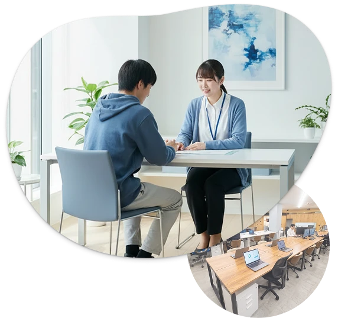
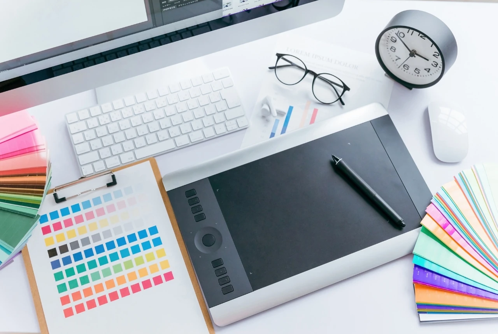
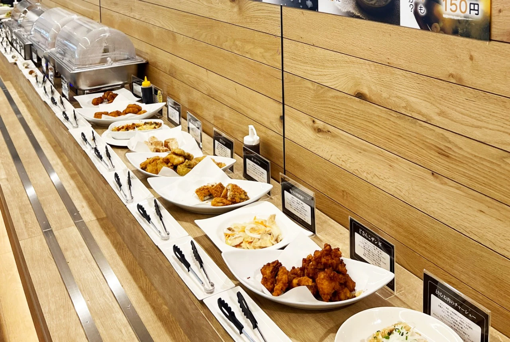
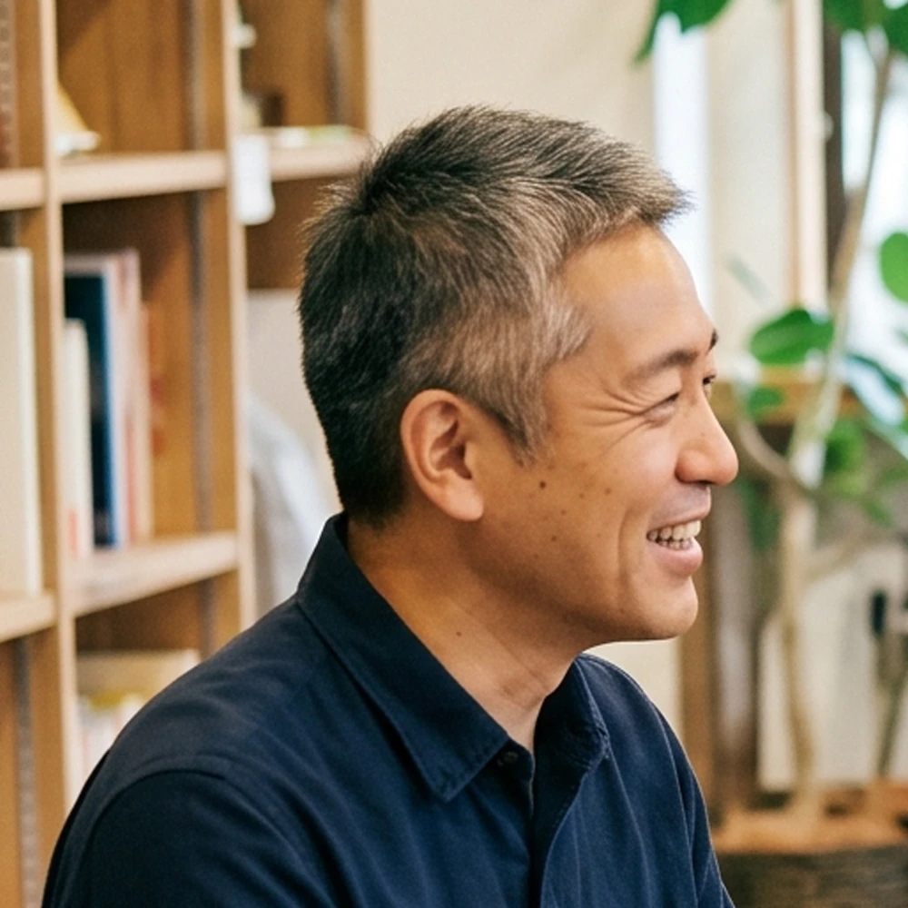
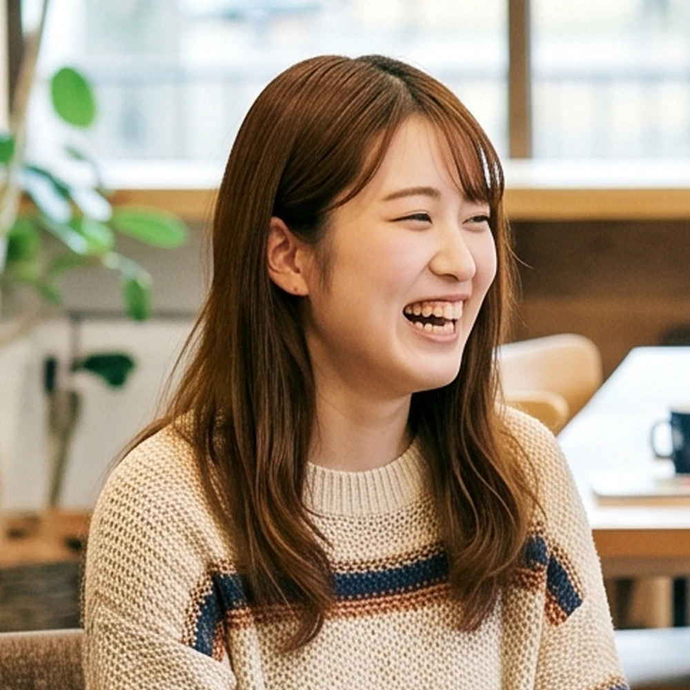
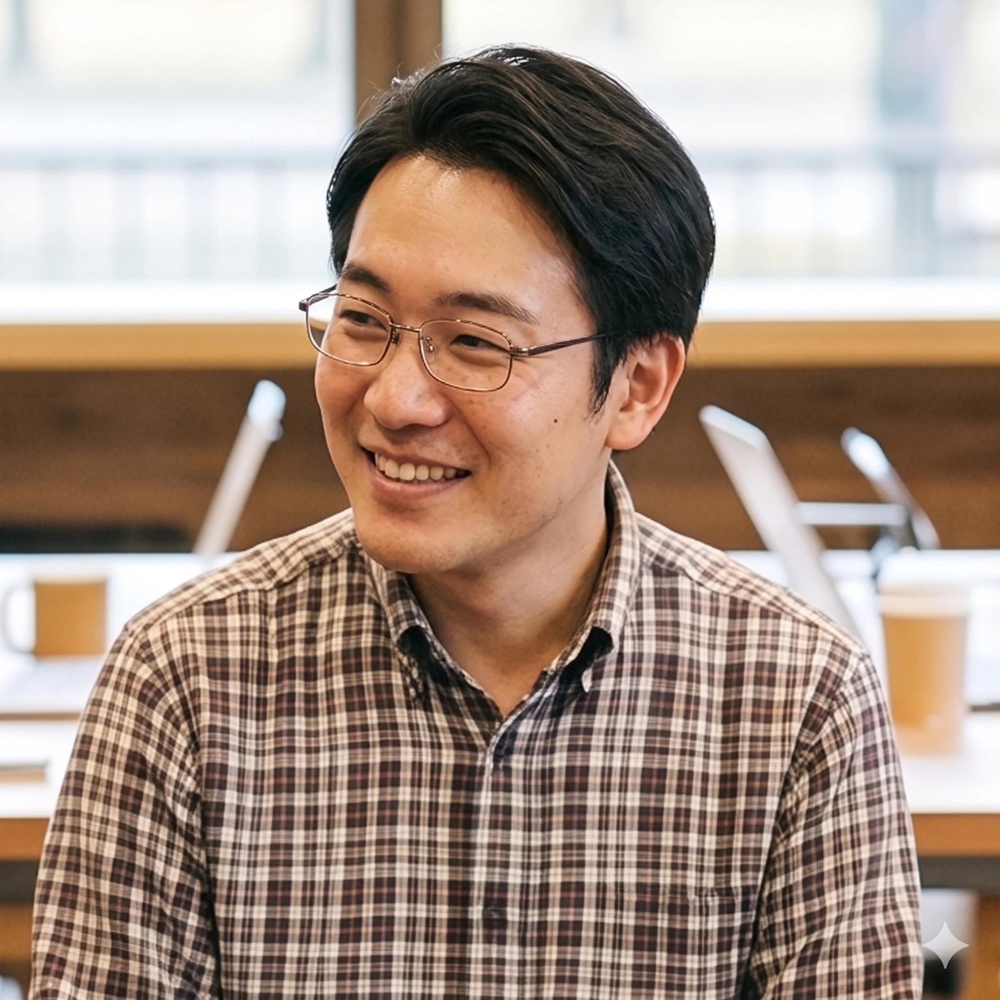
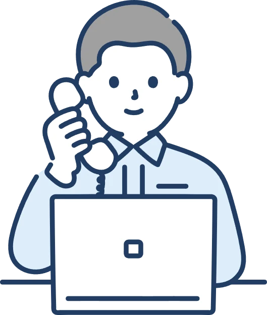
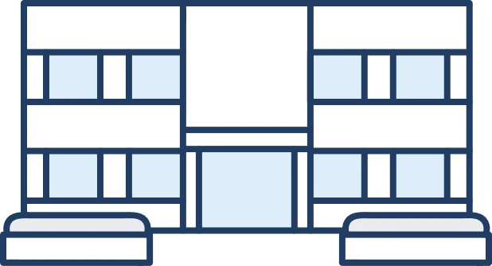
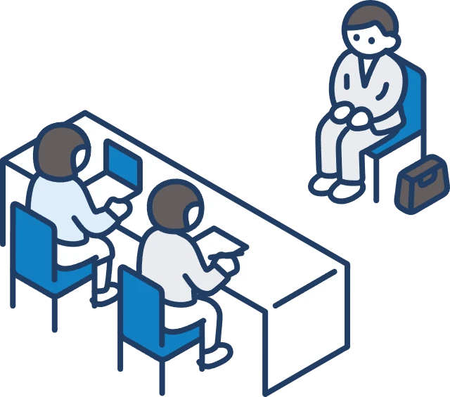

Webページ制作
HTML・CSS・WordPressなどを使い、ホームページの更新や制作に取り組みます。
WORRIES

ABOUT
就労継続支援A型事業所「グランクルール」では、利用者一人ひとりのスキルアップと一般就労を目指した支援を行っています。
専門知識を持つスタッフが在籍し、日々の小さな悩みや体調相談にも対応。未経験の方も安心して取り組める環境を整えています。
JOB DESCRIPTION
HTML・CSS・WordPressなどを使い、ホームページの更新や制作に取り組みます。
さまざまなジャンルの動画制作を通して、編集スキルを身につけます。
データ入力や書類作成など、パソコンを使った幅広い業務を行います。

チラシや名刺、SNS画像など、伝わるデザインを制作します。

店舗での接客・調理補助・お弁当づくりなどを行います。
USER'S VOICE

丁寧に教えてもらえるので、未経験でも安心して仕事を始められました。

困ったときにはスタッフが親身になって話を聞いてくれます。

仕事を通して得意なことが増え、一般就労への自信がつきました。
STAFF'S VOICE
安心して通所できることを第一に、目標に合わせて丁寧に支援します。
小さな成功の積み重ねが大きな自信につながるよう伴走します。
興味のある仕事やスキルに、無理なく挑戦できる機会を用意します。
FLOW

01 お問い合わせまずはお気軽にご連絡ください
02 見学・相談事業所をご案内します
03 体験利用実際の作業を体験しますINFORMATION
FAQ
はい、見学・ご相談だけでも歓迎しています。お気軽にお問い合わせください。
もちろんです。スタッフが基礎から丁寧にサポートします。
障害福祉サービス受給者証が必要です。手続きについてもご案内します。
体調や状況を伺いながら、無理のない利用方法を一緒に考えます。